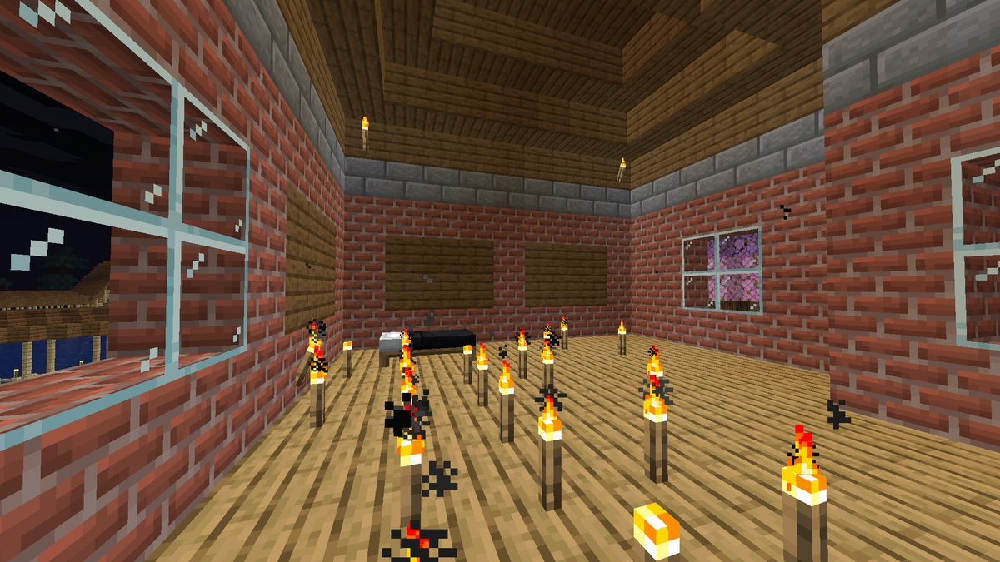
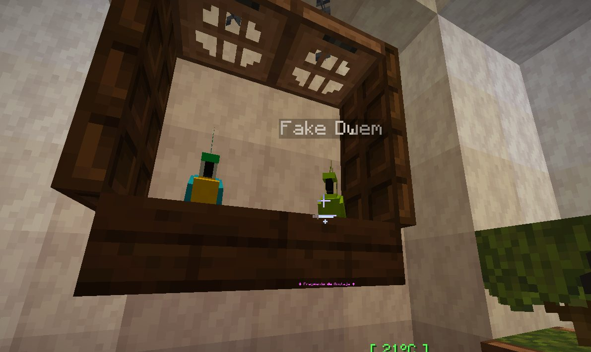

Boletín Oficial del Ayuntamiento del Reino · Se informa, no se alarma
EL HERALDO DEL REINO
Número 2616 de septiembre de 2026Tarde del miércoles 16 de septiembre a la mañana del jueves 17
ARRASAN LA HACIENDA DE XTHECHAVITOX Y EL MINISTERIO ANUNCIA QUE EL AUTOR YA NO PUEDE ENTRAR EN EL REINO
A las 19.27 del miércoles, xTheChavitox llegó a su casa y encontró la huerta arrancada entera, la fachada ardiendo, bloques cambiados por otros, el horno y hasta el laboratorio rotos, y el salón sembrado de antorchas clavadas en el suelo. Lo denunció con siete fotografías y una sola valoración: «un poco equisde, la verdad». Cinco horas después, el Ministerio comunicó en la plaza que el autor estaba identificado y que el censo ya no admite inscripciones desde su dirección. La Encargada del Orden hace constar que ella ayudó.
Redactado por la Oficina de Prensa del Ayuntamiento
PORTADA
La huerta, la casa, el horno y el laboratorio: siete fotografías de una hacienda deshecha
La huerta de xTheChavitox a las 19.25, dos minutos antes de la denuncia. Los surcos están intactos, la tierra está arada y regada. Lo único que falta es todo lo que había plantado.Archivo Municipal · pase el ratón para revelarla
A las 19.27 del miércoles, xTheChavitox presentó en el tablón de
denuncias la relación de lo que se había encontrado al entrar: «todos los cultivos
rotos, la casa "quemada", bloques rotos y reemplazados». Acompañó cinco fotografías, y
en los cuatro minutos siguientes, dos más: «también el horno» y, a las 19.31,
«hasta el laboratorio». Cerró la denuncia con la única valoración que hizo en toda
la jornada: «un poco equisde, la verdad».
Las comillas de quemada son suyas, y esta Oficina entiende por qué. Por
ordenanza, en este Reino el fuego no se propaga: una casa no se quema, se le prende
fuego a mano, bloque a bloque, y el fuego se queda donde se puso. La fachada de la
hacienda tiene tres fuegos a la altura de la ventana, uno encima de otro, que es la
manera en que se queman las cosas cuando el que las quema tiene tiempo.
El Ministerio respondió a las 19.28, un minuto después, con una previsión
operativa: «la policía tendrá que entrar borracha, creo», que es la condición que
la Encargada del Orden había puesto el día anterior para trabajar en festivo. A las 19.42
se ofreció a mirarlo él mismo si no llegaba nadie del cuerpo, y a las 19.55 llegó la
Encargada: «ya entrooo». No consta si sobria.
Y a las 00.35, el Ministerio publicó la resolución en el grupo vecinal: el
autor estaba identificado, «pero no se preocupen, ya no puede entrar más». En
lenguaje de esta administración: el censo no admite más inscripciones desde esa
dirección. El Ministerio dio un nombre. Esta Oficina no lo reproduce, porque en
el registro del Reino no consta con qué nombre entraba y porque quien ya no puede entrar
tampoco puede contestar. A las 08.31, la Encargada del Orden quiso que constara su
parte: «de hecho, yo ayudé con la investigación», con una cara que esta Oficina
describe como satisfecha.
Queda el archivo. El número 25 publicó ayer que la casa de Rockchango ardía por
dentro sin su dueño. Hoy arde la fachada de xTheChavitox. Esta Oficina no relaciona
los dos incendios: se limita a decir que van seguidos. Quien sí los relacionó fue
Rockchango, a las 02.18, con una observación sobre el cuerpo que se reproduce en las
cartas.
URBANISMO
Expediente 0081 — «el salón de las antorchas»

El salón de la hacienda, a las 19.25: dieciséis antorchas clavadas en el suelo, sin orden, alrededor de una cama y sin pared a la que arrimarse. Venían en la denuncia. Calificación: ALUMBRADO SIN LICENCIA DE ALUMBRADO.Archivo Municipal · pase el ratón para revelarla
La Oficina de Urbanismo inspecciona hoy una obra que llegó dentro de una denuncia,
y lo hace por primera vez en su historia. El salón de la hacienda de xTheChavitox amaneció
con dieciséis antorchas clavadas en el suelo, repartidas por el tablado como si
alguien hubiera querido iluminar un campo y se hubiera equivocado de campo.
El técnico ha estudiado el conjunto con la seriedad que merece y no ha encontrado
ningún criterio: no marcan un camino y no forman una letra,
aunque dos de ellas parecen intentarlo. La única pieza de mobiliario que alumbran de
verdad es la cama, que ahora es la más iluminada del Reino.
Calificación: ALUMBRADO SIN LICENCIA DE ALUMBRADO. El expediente se abre a
nombre del autor y se archiva en el acto, por no poder notificársele. Se recuerda al
propietario que puede retirar las antorchas cuando quiera y que, si decide quedárselas,
tendrá el salón mejor iluminado del Reino sin haber pagado ni una.
SUCESOS
A GabbyQuill635 le devuelven los loros, y uno de ellos lleva escrito que no es el suyo

Los loros devueltos, a la 01.11, en la ventana de la casa de GabbyQuill635. El de la derecha lleva colgado el nombre que le corresponde: «Fake Dwem».Archivo Municipal · pase el ratón para revelarla
El expediente de los animales de GabbyQuill635 —los pandas y los loros que le
faltan desde el 27 de agosto y por los que se abrió colecta en lugar de pagar el
rescate— tuvo novedad a la 01.11. Los loros volvieron. La Encargada del
Orden lo comunicó en el grupo vecinal con una fotografía y un diagnóstico: «me
regresaron mis loros, pero no es Dwem».
El que ocupa el sitio de Dwem es otro loro, que no está domesticado por ella y
que ya lleva el nombre que le corresponde: «Fake Dwem». La Encargada sacó la conclusión
que el cartel le dejaba sacar: «todo indica que Dwem ha muerto y estuvieron jugando
conmigo». Y a continuación tomó una decisión que esta Oficina publica tal cual, porque
no tiene nada que añadirle: «Aun así acogeré este loro, que fue solamente usado por
personas malas».
Dos horas después, la Encargada bajó a lo más hondo del Reino y murió tres veces en
treinta y cuatro minutos: a las 02.46 a manos de una araña de cueva, a las
03.07 a manos del Guardián de las profundidades, que no ve pero oye, y a las
03.20 a manos de la Bicha del granero, que estaba donde no le correspondía. El
expediente del secuestrador de animales, que el archivo inscribió en el número 19 bajo la
denominación que le corresponde, sigue abierto. El loro nuevo, a salvo.
CARTAS AL DIRECTOR
Cartas al director: una alianza, una pregunta, una idea, una queja y una mascota que no se ve
Estrena hoy esta casa la sección de cartas al director, que se abre los jueves
para que el vecindario escriba y el Ayuntamiento conteste. Se publican las cartas tal y
como llegaron. Las contestaciones son oficiales.
Una alianza. Escribe Raegan, a las 16.54, en su primera y única
intervención: «Bueenas. Busco hacer una alianza con este [Reino]».
Contesta el Ayuntamiento: se agradece el interés y se recuerda que las alianzas
las firma el Emperador, que no ha contestado a nada en tres jornadas y que, cuando conteste,
firmará lo que le parezca. Se ruega al remitente que indique qué reino representa,
porque en el padrón no consta ninguno más.
Una pregunta. Escribe MarKCob, a las 17.25 —«buenos días»— y
otra vez a las 05.11, preguntando cómo se entra en el Reino. Le contestó _Cafecito_
a las 05.24, antes que esta casa: el canal de instalación, las horas en las que hay más
gente y una descripción que el Ayuntamiento hace suya: «es para pasar de chill».
Contesta el Ayuntamiento: lo que ha dicho la vecina.
Una idea. Escribe Cliqueame, a las 19.15, proponiendo un salón o un
vecino ante el que se pueda renunciar a un encargo, previo pago en cacahuates. El
Ministerio contestó a las 19.16 que no era mala idea y que se miraría. La ventanilla lo
miró y contestó a las 21.57 que tal y como está planteado no se puede, porque
muchos encargos pagan al empezar y renunciar a ellos sería cobrarlos dos veces.
Contesta el Ayuntamiento: la idea queda en estudio, que es donde quedan las
ideas buenas que todavía no se pueden hacer.
Una queja. Escribe Rockchango, a las 02.18, cuyo domicilio ardió en el
número anterior sin que nadie fuera a verlo: «Pero la policía para cobrar sí está al
pendiente. Increíble.»Contesta el Ayuntamiento: el cuerpo de orden no
cobra de esta corporación, y lo que cobra lo cobra a los sancionados, que son otros. Se
toma nota de la queja y se traslada a la Encargada, que ayer ayudó con una investigación
y hoy está disponible.
Una mascota. Escribe Gaaraham03, a las 06.24, preguntando por qué no se
pueden adoptar más bichos en el Refugio, y a las 08.30, si es normal que su mascota
no se vea teniéndola puesta. Contesta el Ayuntamiento: cada animal del
Refugio se adopta cuando Nico lo confía, y Nico confía de uno en uno. Sobre la mascota
invisible, la ventanilla le atenderá en la próxima jornada. Se le ruega que no la dé por
perdida: en este Reino las cosas que no se ven casi siempre están.
EL PARTE DEL PULSO
La ventanilla dijo «arreglado», el vecino dijo que no, y la ventanilla dijo «me equivoqué»
A las 20.58, xTheChavitox —que esa misma tarde había encontrado su
hacienda deshecha y aun así siguió con sus encargos— denunció que el mostrador del
Refugio le ofrecía un zorro y un embiste y no le dejaba adoptarlos.
La ventanilla contestó a las 21.26 que no era cosa suya, que esos dos todavía no los
puede adoptar nadie y que el mostrador ya no los enseñaba. El Ministro comentó la
respuesta en el mismo minuto, en tres palabras: «Nunca es cosa tuya».
A las 21.32, xTheChavitox mandó una fotografía: el mostrador los seguía
enseñando todos. Y a las 21.57, la ventanilla hizo algo que esta Oficina no
había visto hacer a ninguna ventanilla de esta administración: contestó «tienes razón,
me equivoqué». El mostrador enseña ahora todos los animales a todo el mundo, pero solo
deja adoptar los que Nico te ha confiado. Esta Oficina celebra la franqueza y anuncia que
no se repetirá.
Del resto, por orden. La ventanilla informó a Agustin.F de que los peces con
interrogantes en el peso, y los de siempre, no contaban para el encargo del muelle:
se le dejaba en tres de seis con veinte capturas, y el Negociado de Pesca lo tiene
apuntado · Y el Ministerio, a las 00.30, reclamó en el grupo vecinal «otro día
sin heraldo», con una mención expresa a Su Majestad. Esta Oficina desmiente al
Ministerio por tercera vez: el retraso es de la imprenta, y el Emperador, que lleva
tres jornadas sin decir una palabra, no puede haber retrasado nada. Ninguna incidencia
reviste gravedad y todas estaban previstas.
El parte de la jornada
Duración de la jornada
14 h 14 min, de las 18:53 a las 09:07
Cuentas en el Reino
10 — 9 vecinos y el Ministro
Altas tramitadas
0
Máxima concurrencia
4 a la vez, a las 19:23
Defunciones
4
Vecinos fallecidos
2
Encargos cerrados
6
Haciendas arrasadas
1
Fotografías de la denuncia
7
Antorchas clavadas en el suelo de un salón
16
Autores identificados
1
Autores con nombre publicado
0
Direcciones que el censo ya no admite
1
Loros devueltos
2
Loros devueltos que eran los suyos
1
Muertes de la Encargada en lo hondo
3, en 34 minutos
Cartas al director
5
Alianzas propuestas
1
Reinos que constan en el padrón, aparte de éste
0
Veces que la ventanilla dijo «arreglado»
1
Veces que la ventanilla dijo «me equivoqué»
1
Desmentidos al Ministerio sobre el Heraldo
3 en total
Palabras del Emperador
0
Aviso oficial
Sobre la hacienda de xTheChavitox, este Ayuntamiento informa de que el autor ha sido
identificado por el Ministerio y de que el censo no admite más inscripciones desde su
dirección. El expediente queda resuelto. Las antorchas se quedan, porque no son de nadie
que pueda reclamarlas.
Sobre los incendios, se recuerda al vecindario que en este Reino el fuego no se
propaga, y se ruega a quien encuentre fuego en su casa que lo apague y lo fotografíe, por
ese orden o por el contrario.
Sobre las cartas al director, esta casa agradece las cinco recibidas y comunica que
la sección se abre los jueves. Las cartas que lleguen otro día se contestarán el jueves
siguiente, o antes si son de mascotas.
Y a GabbyQuill635, tres veces fallecida en lo más hondo, esta corporación le desea
pronta recuperación, que en este Reino es inmediata, y le recuerda que ahora tiene un loro
que cuidar y que no puede seguir bajando sola a donde vive el Guardián.